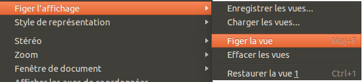

Cette documentation n'est pas terminée. SVP contribuez en traduisant la documentation.
Allez voir Draft ShapeString pour un modèle de documentation. Gui Command donne un aperçu des commandes. Et, pour voir d'autres commandes Liste des Commandes.
Allez sur Help FreeCAD ou comment faire pour contribuer.
|
| Emplacement du menu |
|---|
| Affichage → Figer Affichage |
| Ateliers |
| Tous |
| Raccourci par défaut |
| Voir aussi |
Description
Vous permet d'enregistrer une vision particulière de l'avancement des travaux, d'archiver et de le restaurer si nécessaire.
Ne pas enregistrer une capture d'écran (une photographie de l'œuvre), mais la position de l'axe par rapport à l'observateur.
Il peut enregistrer une vue de travail sur un document et le joindre dans un autre document.
Utilisation
Figer la vue
- Mettre en place la vue que vous souhaitez enregistrer et garder disponible.
- Lancer le menu Affichage → Figer l'affichage. Une seconde fenêtre apparaît pour la gestion des vues:

{kind=link}
- Sélectionnez Figer la vue.
- Choisissez une vue standard et noter qu'elle remplace la précédente.
- Relancez le menu Affichage → Figer l'affichage et notez que la fenêtre de la gestion des vues contient maintenant aussi l'option Restaurer la vue 1. La Vue 1 est figée.
- Sélectionnez Restaurer la vue 1
Enregistrer les vues ...
Pour stocker la vue et la rendre réutilisable dans d'autres documents:
- Sélectionnez Enregistrer les vues .... La boîte de dialogue pour spécifier un nom et l'emplacement.
- Indiquez un nom et un emplacement pour stocker la vue et confirmer.
Téléchargez les vues
Les vues enregistrées peuvent être chargées et utilisées dans les nouveaux documents, agir comme des boutons complémentaires à ceux des vues standards.
Lorsque vous figez une vue et que vous voulez lancer une autre action, un avertissement vous disant que si vous poursuivez sans sauvegarder, la vue sera perdue. Pour ne pas perdre les éventuelles vues figées, sauver les avant d'importer celles que vous avez déjà archivées.
Effacer les vues
Réinitialiser la liste des vues figées ou importées.
Autres commandes utiles pour gérer les points de vue et fenêtres
- Créer une nouvelle vue pour travailler sur plusieurs vues simultanément.
- Enregistrer l'image pour enregistrer un écran.
- Fenêtre Document pour fenêtre mobiles.
- Menu fenêtres pour gérer les fenêtres actives.